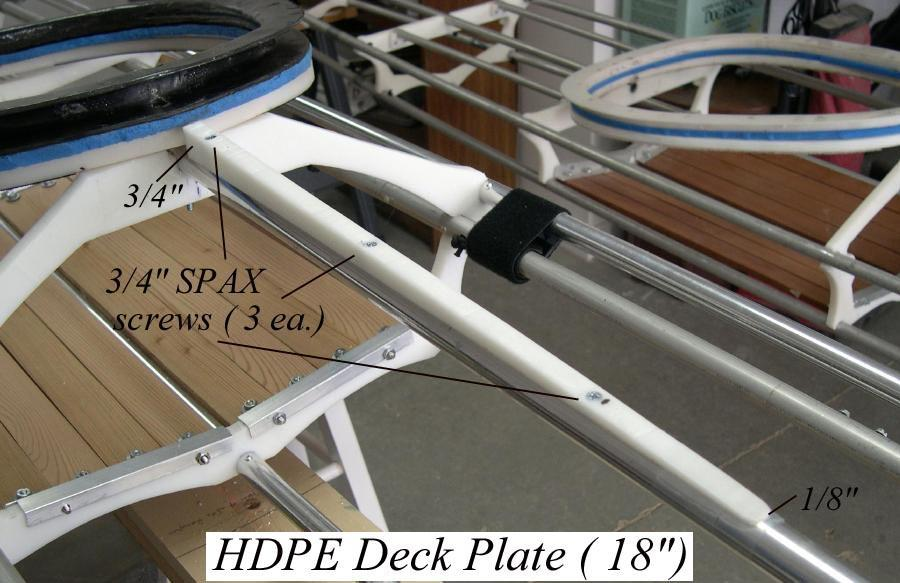

| HDPE Deck Plate | Menu Previous Page Next Page |
|
 If a coaming baseplate is used, an HDPE deckplate allows the skin to fit smoothly over the baseplate while skinning the deck. The 18" plate is made of 1/2" HDPE and tapers from 3/4" at the coaming to 1/8" at the other end. The plate is drilled, countersunk, and attached with three stainless self tapping screws. If no coaming base plate is used, the HDPE deck plate is not required. |
|